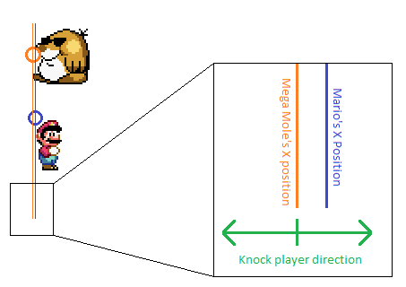
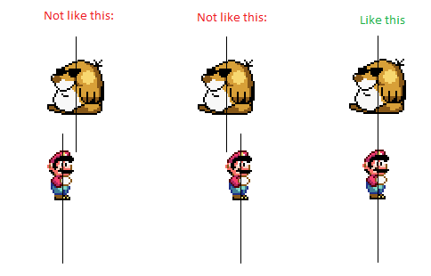
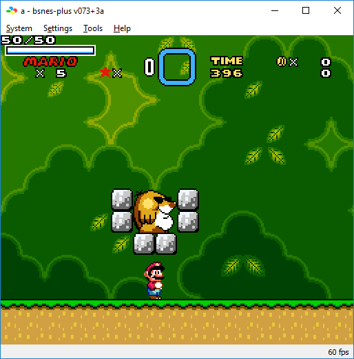

This is only used when you have !Setting_PlayerHP_VaryingDamage set to 1.
Simply put, the damage (how much HP have been loss) the player receives when touching the sprite. Each number here is each sprite number (for example, the first number is sprite number 0, the second is sprite number 1 and so on). Values here are decimal (if you want hex, prefix your number with “$” (i.e $0A instead of 10)). Watch out that you must avoid putting damage larger than 255 (when !Setting_PlayerHP_TwoByte is set to 0) or 65535 (when !Setting_PlayerHP_TwoByte is set to 1) as it is larger than the max unsigned integer a register can store; thus overflowing and modulos it by 256 or 65536 and ends up with weird damage (for example: a damage of 256 on an 8-bit HP results 0 damage).
Only used when !Setting_PlayerHP_Knockback is set to a non-zero value.
After all the damage tables above, this table contains 16-bit hexadecimal signed integer values ($0000-$7FFF zero and positive, $8000-$FFFF negative) representing the displacement X position of the sprite to determine which way to knock the player. Unlike most patches that include the knockback on SMW central (or any other SMW hacking website), they only knock the player in the direction opposite of the player's current facing direction instead of checking which side the player got hit.
The reason for having a table instead of a straight-up direct comparing the sprite's X position with the player's X position is because sprites don't always have their position point aligned consistently with their bodies. Most of the time, they are often on the left edge of the sprite either on the very top-left corner for most sprites, left-middle on other sprites that is 32 pixels (2 full blocks) tall, or already centered in with the sprite (such as a Thwomp). Mario, on the other hand, always have the position point located on the top-left corner of his 16x32 sprite, regardless if the player is crouching or whatever powerup status Mario is:
It seems like that all object-interacting sprites that are taller than a single block always have their position point just a full block off the ground, probably because how the developers of Nintendo programmed the sprite's spawning in the level to be on top the ground (as spawning in the level are 16x16 grid-based).
If I use direct comparison without offsetting the sprite's position, Mario can knockback in directions not centered with the sprite, for example, should Mario position like this:

He would knock rightwards, despite Mario is mostly to the left of the sprite's center. In the image above, you see that Mario's x position represented as a blue line and the Mega Mole's as an orange line. If Mario's X position is anywhere to the right (or at because there is no direction besides left or right), he would get knocked rightwards. If he is to the left, he gets knocked to the left. Essentially, the knockback code does not recognize the actual center X position of sprites.
To fix this off-centered “knock boundary” of the sprite, I recommend using a debugger to find the displacement value:
- Make a test level with only one sprite on screen (so that it is easier to find what slot index the sprite is using) that cannot move horizontally
(such as editing the sprite's code to prevent it from moving, have blocks around it that the sprite does not have enough room to move, etc.) Then open your game
via a debugger (to me, I use BSNES plus) and position Mario and the sprite so that their center positions
(not their actual positions) align, for example, a Mega Mole:
 - In a debugging emulator. I highly recommend rounding the X positions of both characters to the nearest 8th pixel ($000F becomes $0010 and $0021 becomes $0020, for example)
if the sprite is an even number of 8x8 tiles wide (small sprites that are single 8x8 tiles like the Volcano Lotus Seeds, for example) because being pixel-perfect is near
impossible, and the fact that the SNES's tile handling are in units of 8x8 tiles:
 - Now freeze/pause the game (either in-game pausing, or emulator's pausing). Now try to view the game's RAM (make sure it updates to display the actual current RAM) and note
the values for address $7E0094 (the player's X position in the level, 2 bytes), $7E00E4 (sprite's X position, low byte (each byte here are each sprite slot)),
and $7E14E0 (same as $7E00E4, but a high byte instead). Note that if you're using SA-1, you substitute the sprite tables with their SA-1 equivalents
(check out its documents there). Of course, you could use shorten SNES mirror register equivalents instead ($7E0094 can be replaced with $94.)
In my example, to view the RAM, simply go to Menu Bar -> Tools -> Debugger -> Menu Bar of tools -> Tools -> Memory Editor and type in the address you want to look at. So after searching the player's x position and the sprite's, I got:
Player's X position in the level:
So the player's X position is the value $0068 (remember, the SNES is low-endian).7E0090 00 00 00 01 68 00 60 01 48 01 80 00 00 00 00 00
And now the sprite's X position in the level (underlined is the sprite table):
By the way, I'm using sprite memory 00 (which the first sprite will spawn in slot 9, thus the red font is the numbers we need). The sprite's X position is #$0061, it is actually meant to be $0060, but the sprite have wiggle room to maneuver and thus, would be +1 to the right. We would round this number to $0060.7E00E0 00 40 00 00 00 00 00 00 00 00 00 00 00 61 00 00
7E14E0 00 00 00 00 00 00 00 00 00 00 00 00 00 00 00 00
- Subtract the player's position by the sprite's, the subtraction result is the displacement value. Using the example above, $0068 - $0060 = $0008, $0008 is the displacement.
- Lastly, now use this number for the displacement table on the sprite number you're testing on. In this example above, the mega mole is sprite number $BF, write $0008
on the last number in the row that was commented “#$B0-#$BF” (it's already written to, so this is just a test demonstration). Now re-install the patch to apply the changes
to your game.
For such sprites that are a single 8x8 wide and tall, such as the Volcano Lotus seeds and Pitchin' Chuck's baseballs, their position point is at the top-left corner of the tile, thus their displacement value is $FFFC (-4 in signed decimal).